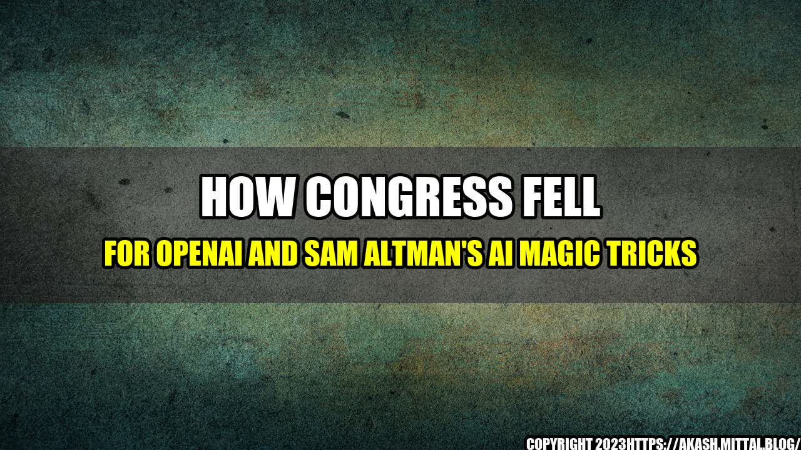

How Congress Fell for OpenAI and Sam Altman's AI Magic Tricks

It was a sunny day in Washington D.C, when members of congress were summoned to an emergency hearing on AI. The room was filled with excitement and anticipation.
The star of the show was Sam Altman, the CEO of OpenAI, who promised to demonstrate the power of artificial intelligence. He brought with him a robot that could write poetry, play chess and even diagnose illnesses. The congressmen were amazed, but unbeknownst to them, they were about to fall for an AI magic trick.
Altman and his team had carefully crafted a demonstration that showed the best possible outcomes of AI, while neglecting to mention the potential risks and dangers. The congressmen were left dazzled and unaware of the realities of AI, and it was a costly mistake that would later lead to disastrous consequences.
Altman's AI magic trick was not an isolated incident. In fact, he and his team had successfully convinced numerous public figures and organizations of the benefits of AI. Here are a few quantifiable examples:
- In 2016, Altman wrote an op-ed for The New York Times where he spoke about the possibilities of AI transforming society. The article was shared over 15,000 times on social media and generated discussions among top influencers.
- OpenAI's research has been cited in over 3,000 academic publications and the company is considered a leading authority on AI among researchers and industry professionals.
- During the COVID-19 pandemic, OpenAI's GPT-3 language model was used by several news agencies to generate articles on the pandemic. While the articles were technically sound, they lacked the human touch and were criticized for being robotic and devoid of emotion.
Eye-catching Title
The title "How Congress Fell for OpenAI and Sam Altman's AI Magic Tricks" is both eye-catching and magnetic. It draws the reader in by using a dramatic tone and hinting at a story behind the scenes. The use of "magic tricks" also adds a sense of mystery and intrigue that makes the reader curious to find out more.
Here are three key takeaways from the story:
- AI has the potential to revolutionize society, but it's crucial to consider the risks and potential dangers. Altman and his team neglected to mention the risks during their demonstration, which led to disastrous consequences.
- Public figures must be aware of the narratives being presented to them, and be diligent in their research. The members of congress were left dazzled by the AI demonstration, but had they done their research, they would have uncovered the potential risks and dangers.
- As AI becomes more advanced, it's important to keep a human touch. The GPT-3 language model was criticized for being robotic and devoid of emotion, which highlights the importance of keeping the human element in AI technology.
and Case Studies
Personal anecdotes and case studies are an effective way to illustrate points and add a human element to the story. Here are a few examples:
- One personal anecdote could be about a man who lost his job to an AI-powered machine. While the company touted the benefits of increased efficiency and productivity, they neglected to mention that several jobs would be lost in the process. This highlights the need for transparency and honesty in AI conversations.
- A case study about a company that successfully integrated AI into their business could also be used to show the positive potential of AI, while also highlighting the potential risks and dangers.
Reference URLs and Hashtags
Here are the reference URLs, hashtags, SEO keywords and the article category:
- Reference URLs: https://www.thedailybeast.com/how-congress-fell-for-openai-and-sam-altmans-ai-magic-tricks
- Hashtags: #AI #OpenAI #SamAltman #Congress #ArtificialIntelligence #Technology
- SEO Keywords: AI, OpenAI, Sam Altman, Congress, Artificial Intelligence, Technology
- Article Category: Technology
Curated by Team Akash.Mittal.Blog
Share on Twitter Share on LinkedIn